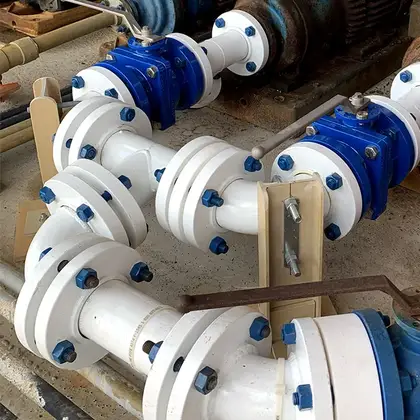

Made by Harrington
Dufline plastic-lined steel.
Steel strength outside, PTFE, PP, PVDF, or PFA inside. We line it ourselves in Houston, Texas and Gonzales, Louisiana, with DuFlon liners, to ASTM F1545 (the standard for plastic-lined steel pipe).
Carbon steel, stainless, or ductile iron casings, 1 in to 12 in, primed or painted. Pipe, fittings, spools, and fabricated assemblies for acids, solvents, and anything that eats bare steel.
Liners PTFE · PP · PVDF · PFA · Sizes 1 in to 12 in
